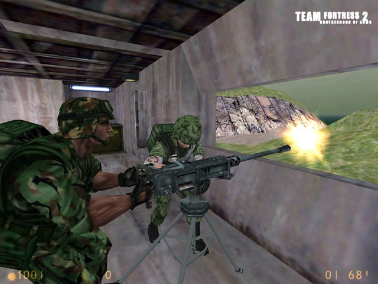

O que é TEAM FORTRESS 2? Team Fortress 2 (ou TF2) é um jogo de tiro em primeira pessoa, multijogador e em equipe desenvolvido pela Valve Corporation como parte de sua compilação de jogos para a The Orange Box. Foi lançada para o Microsoft Windows, Xbox 360, e Playstation 3 em 2007, e vendido separadamente em 2008. O jogo foi anunciado em 1998 como uma continuação para o mod original Team Fortress para Quake, mas até então passou por vários conceitos e designs. Em 1999, o jogo pareceu diferente do original e do Team Fortress Classic para Half-Life indo para uma linha mais realística e militar, mas o design foi metamorfoseado ainda mais pelo desenvolvimento de 9 anos do jogo. A rendição final do TF2 parece mais com o original Team Fortress e Team Fortress Classic, e aparenta um visual cartunesco, baseado na arte de J. C. Leyendecker, Dean Cornwell e Norman Rockwell seguindo a tendência popular de filmes em CGI (em particular, filmes recentemente feito pela Pixar/Disney, como Os Incríveis (título português de The Incredibles). A falta de informação aparente no progresso de seis anos do desenvolvimento do jogo causou ele de ser rotulado como vaporware e foi regularmente destaque na lista anual da Wired News junto com outros candidatos. O jogo recebeu aclamações críticas e vários prêmios desde o lançamento. Desenvolvido por: Valve Editor: Valve Distribuidor: Steam Motor: Source Modos: Multijogador Gênero: Tiro em primeira pessoa Plataformas: Microsoft Windows, Xbox 360, PlayStation 3, Mac OS X, Linux Desenvolvimento - Origens Originalmente planejado como um mod gratuito para Quake, o desenvolvimento do Team Fortress 2 foi para a engine GoldSrc em 1998 depois de fundarem a Team Fortress Software - consistindo de Robin Walker e John Cook - que primeiramente contrataram e finalmente foram empregados pela Valve Corporation. No ponto da aquisição da Team Fortress Software a produção aumentou muito e o jogo foi promovido como único, parte de um produto para fãs desde então, junto com problemas de tempo, parte da base de jogadores de Team Fortress compraram o Half-Life somente para o lançamento gratuito do Team Fortress 2. O trabalho começou simplesmente como uma simples transferência do jogo feito em 1999 como o grátis Team Fortress Classic. Notávelmente, Team Fortress Classic foi construído inteiramente com as ferramentas de desenvolvimento de software do Half-Life lançado para público e indústria como exemplo de sua flexibilidade. Walker e Cook foram pesadamente influenciados por sua estadia contratual de três meses na Valve, e agora estavam empregados em tempo integral, que passou por uma rápida metamorfose. Team Fortress 2 era pra ser um jogo de guerra moderna, com um comando de hierarquia incluindo o comandante com um campo de visão aéreo do campo de batalha, quedas de paraquedas no território inimigo, comunicação de voz em rede e algumas outras inovações.  Versão original do jogo. O design "Invasion" Quando a árvore de código do Half-Life 2 foi jogada na internet no final de 2003, dois modelos do Team Fortress 2 foram incluídos, junto com referências diretas do código base do jogo. Consistiam de um soldado alien e um soldado humano foram de proporção. O código foi interpretado pelos fãs como fazendo referência a Guerra de sete horas, uma parte integral da história do Half-Life; porém, os dois modelos vazados de jogador não reafirmavam nenhum estilo da série Half-Life. O Source SDK foi lançado junto com o código-fonte do Half-Life 2, e provia referências ao Team Fortress 2. Parte do código confirmava meramente o que já se acreditava, mas outros segmentos proveram informações completamente novas, como a precença de NPCs em partidas multiplayers, a possibilidade do jogo se passar no universo de Half-Life 2, adição de arma de plasma e lança mísseis entre outros. Nenhuma das informações que vazaram aparentam ter qualquer relevância a versão atual do jogo. Esta interação foi mencionada em uma intrevista feita em Agosto de 2007 com Gabe Newell na GameTrailers e na entrevista feita em Setembro de 2010 com a PC Gamer (inglês), onde foi mencionado "Invasion" como sendo a segunda fase do desenvolvimento do Team Fortress 2 pela Valve Software. O Design Final O próximo desenvolvimento público significativo ocorreu com o lançamento de Half-Life 2 em 2004: O Diretor de Marketing da Valve Doug Lambardi disse que Team Fortress 2 ainda estava em desenvolvimento e que informações em relação ao mesmo viriam após o lançamento de Half-Life 2. Isso não aconteceu; nenhuma notícia foi solta após um comentário similar feito por Lombardi durante uma entrevista feita sobre o Half-Life 2: Episode One. Próximo ao lançamento do Episode One, Gabe Newell comentou mais uma vez que notícias sobre Team Fortress 2 estavam por vir, e desta vez vieram. Team Fortress 2 foi re-revelado um mês depois no evento de Showcase de Verão da EA em Julho de 2006. Walker revelou em Março de 2007 que a Valve teria desenvolvido sigilosamente "provavelmente três ou quatro jogos diferentes" antes de decidir seu design final. Graças ao tempo de desenvolvimento do jogo este foi mencionado várias vezes junto de Duke Nukem Forever, outro jogo altamente antecipado que teve muitos anos de atraso no desenvolvimento e trocas de engines. A versão beta do jogo possuía seis mapas multiplayers, os quais três continham comentários opcionais feitos pelos desenvolvedores do game design, design de níveis e design de personagens, e proviam mais informações sobre a história por traz do desenvolvimento. Team Fortress 2 não tentou o estilo gráfico realista utilizado em outros jogos da Valve na engine Source como Half-Life 2, Day of Defeat: Source ou Counter-Strike: Source. Ao invés disso, ele utiliza um estilo mais cartoonizado "altamente influenciado pelas imagens de comerciais do início do século 20". Este efeito é obtido utilizando uma técnica de renderização de luz especial interna da Valve que faz uso extensivo de 'Phong shading'. Os comentários de desenvolvimento em jogo sugerem que parte da razão do estilo cartoonizado é devido a dificuldade em explicar os mapas e personagens em termos realistas. A remoção da ênfase nos padrões realistas permitem que estas questões sejam deixadas de lado. O jogo foi lançado com as novas tecnologias de dynamic lighting, shadowing e soft particle da engine Source, dentre várias outros recursos não anunciados, juntamente com Half-Life 2: Episode Two. Team Fortress 2 foi também o primeiro jogo a implementar o novo recurso de animação Facial 3 da engine Source. O estilo artístico para o jogo foi inspirado por J. C. Leyendecker, assim como por Dean Cornwell e Norman Rockwell. Seus estilos distintos com fortes silhuetas e sombreamento para chamar a atenção à detalhes específicos foram adaptados a fim de criar modelos distintos, com o foco na criação do time, classe e arma dos personagens para serem facilmente identificados. Silhuetas e animações foram utilizadas para fazer as classes dos personagens aparentes até mesmo a distância, e o esquema de cores que chama atenção à área do peito traz o foco para a arma selecionada. Mapas foram desenhados com um espaço neutro entre as duas bases. Eles são tipicamente fortalezas de espionagem, mas disfarçados de construções imperceptíveis para que suas proximidades sejam plausíveis. Os mapas possuem pouca desordem visual e estilizada, quase num modelo impressionista, para permitir os inimigos a serem facilmente localizados. O design impressionista escolhido também afeta texturas, que são baseadas em fotos que são filtradas e melhoradas a mão, dando a elas uma qualidade tátil e dando ao Team Fortress 2 este seu visual distinto. As bases são desenhadas para que jogadores possam imediatamente saber onde estão. A base do RED utilizam cores quentes, materiais naturais e formas angulares, enquanto a base do BLU usa cores frias, materiais industriais e formas ortogonais. Versão final do jogo. O Lançamento Durante a conferência de imprensa da Eletronic Arts de Julho de 2006, a Valve revelou que Team Fortress 2 seria lançado como um componente multiplayer de Half-Life 2: Episode Two. O trailer de conferência demonstrou o novo estilo gráfico do jogo contendo todas as classes do Team Fortress original, voltado a um estilo visual mais alegre e caprichoso se opondo ao sombrio, de alguma forma tradicional simulador militar originalmente apresentado. Gabe Newell, o diretor da Valve, disse que o objetivo deles era o de criar "o jogo de classes multiplayer de melhor visual e melhor jogabilidade". O beta de Team Fortress 2 foi lançado via Steam dia 17 de Setembro de 2007 para clientes que haviam feito a pré-compra da The Orange Box e para aqueles que ativaram seu cupom da Black Box, que vinha incluso com a Placa de Vídeo ATI GD 2900XT. Em adição aos compradores da The Orange Box, centros de jogos em LAN utilizando o sistema do 'Steam for Cafe' tiveram o jogo instalado e pronto para jogar. Team Fortress 2 foi lançado dia 10 de outubro de 2007 tanto como produto stand-alone via Steam e em lojas físicas como parte da The Orange Box, um pacote de compilações com preços padrões para cada plataforma de jogos. O pacote também continha Half-Life 2, Half-Life 2: Episode One, Half-Life 2: Episode Two e Portal. Valve ofereceu a The Orange Box com um desconto de U$5 para aqueles que fizeram a pré-compra via Steam antes do dia 10 de outubro, tão quão a oportunidade de participar da versão beta test final de Team Fortress 2. Prêmios Team Fortress 2 ganhou vários prêmios desde seu lançamento. Em seu evento de premiações "Best of 2007", a IGN. com honrou o jogo com o prêmio de "Melhor Design Artístico" para PC. Adicionalmente, Team Fortress 2 recebeu prêmios por "Melhor experiência Multiplayer (PC)" e "Melhor Direção de Arte (PC)" pela 1UP.com em sua edição de prêmios de 2007. O jogo também ganhou "Melhor Jogo Multiplayer do Ano" para ambos PC e qualquer outra plataforma no evento de premiações da GameSpy de 2007 juntamente com o prêmio de "Estilo Artístico mais original". |